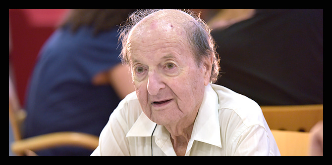

The Jack, Joseph and Morton Mandel Foundation mourns the loss of Professor Chaim Adler, who served as head of the education unit of the Mandel School for Educational Leadership from 1996 to 2003 and was a senior faculty member of the Mandel Graduate Unit from 2003 until his death in April, 2021.
Professor Adler’s exemplary work as head of the School’s education unit reflected his character and educational worldview. Under his leadership, the unit built trust and promoted teamwork, collaboration, and collegiality among fellows and faculty. His managerial style was to support his staff behind the scenes, while initiating profound changes in infrastructure with an approach that is both practical and meticulous.
Under Professor Adler's leadership, the Mandel School's education unit expanded and became a collaborative unit in which all faculty members could express their own ideas and worldviews. Curricular components and activities were integrated and consolidated into a holistic course with its own internal logic under the umbrella of the education unit. Steps were taken to involve the fellows in developing the curriculum and to offer them greater choice and independence in planning and studying the educational issues of interest to them. These efforts transformed the School's education unit into a leading, groundbreaking unit that contributed to and influenced the development of many educational initiatives established by fellows and graduates.
Professor Adler continued this important work, as well as his dedicated personal mentoring of fellows at the School, in his role as an advisor and senior faculty member of the Mandel Graduate Unit, which began in 2003. In this capacity, he provided personal consultations to graduates in the field, helping them with personal, professional, and pedagogical dilemmas and providing them with guidance at decision-making junctures. He maintained warm, personal relationships with many of the fellows he guided and the graduates he advised. Through them, his educational philosophy continues to spread light in the world.
Chaim Adler completed a master’s degree in sociology and education at the Hebrew University of Jerusalem, where he also completed a doctorate in education, with research focusing on high school dropouts. In 1966, he joined the faculty of the Hebrew University, where he worked until his retirement, and served thereafter as professor emeritus of education. From 1969 to 1992, he headed the sociology of education track at the Hebrew University School of Education. In 1968, Professor Seymour Fox, founder of the Research Institute for Innovation in Education, invited him to direct the Institute. He spent the next two decades directing the Institute, where he researched ways of advancing vulnerable groups in society, from early childhood education through adult education, and developed programs that were implemented in educational settings in Israel and around the world.
In 1975, Professor Adler was a founding partner of the Manof youth village for marginalized youth. From then until his death, he chaired the village’s non-profit association. His various public positions over the years included chairing numerous committees on disengaged and at-risk youth, immigrant absorption, secondary education, non-formal education, and more.
In 1992, Chaim Adler was appointed director of the Hebrew University School of Education and head of educational research at the University’s Center for Social Policy Research. Over the years, he served as lecturer and visiting scholar at Harvard University, Stanford University, Rutgers University, and the University of Chicago. He also served as a member of the board of governors of the Taub Center for Social Policy Studies in Israel, and served as head of the Center's education policy program.
Chaim Adler was a pioneering researcher in the sociology of education and one of Israel’s leading education researchers. His research examined education as a tool for social change, the role of education in advancing disadvantaged social groups and absorbing immigrant youth, and youth culture in the modern era. He worked tirelessly in these areas, in both the academic and practical arenas, in order to reduce social gaps through education, and his research contributed greatly to education policy in Israel. In 2006, he received the Israel Prize for Education in recognition of his many contributions to the field of education.
{kind=link}